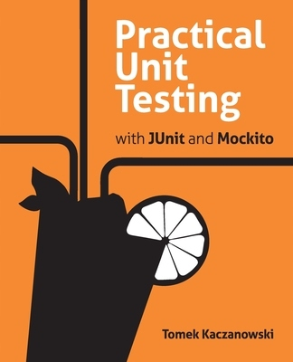
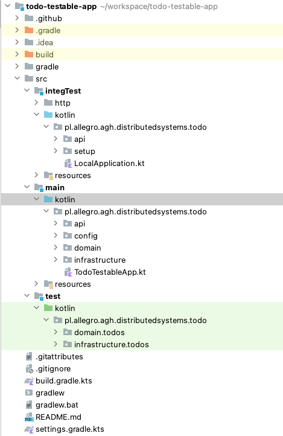
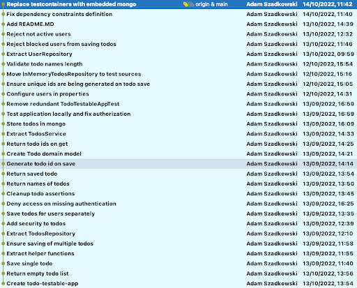
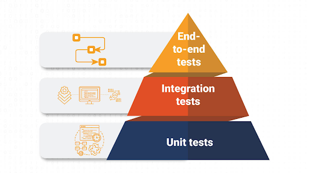
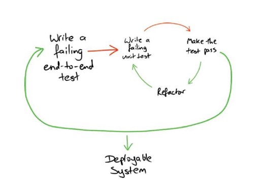

Testowanie
Adam Szadkowski, Tomek Kaczanowski
O nas
Tomek Kaczanowski
Ex-developer. Niegdyś wielki miłośnik pisania testów (i o testach). Kiedyś kodował w Javie, dziś w google docs i gmailu. Od 2,5 roku w Allegro, opiekuje się zespołami Trafficu (SEO, PPC, Afiliacja) Adam Szadkowski
Developer, który pracę zaczynał od systemów wbudowanych i programowania w asemblerze. W pracy skupiony na tematach clean code’owych i dobrych praktykach w programowaniu. Aktualnie współtworzy narzędzia wspomagające zespół PPC w Allegro. Prywatnie przewodnik psa Ziutka, amator gry na basie i fotografii.

Working Software Over Comprehensive Documentation ;)
Repository:
Wymagania:
- IntelliJ IDEA
- Java 11 lub 17
Build command:
$ ./gradlew clean buildAplikacja
Wymagania
- Tworzenie TODOsów
- Listowanie TODOsów
- Separacja TODOsów między użytkownikami
- Stała lista użytkowników w konfiguracji
Struktura aplikacji
- Podział na kod produkcyjny, testy unitowe oraz testy integracyjne
- Przykładowe zapytania http do aplikacji znajdują się w folderze integTest/http
- Testy manualne można przeprowadzić korzystając z klasy LocalApplication w źródłach testów integracyjnych
Proces powstawania aplikacji
- Patrząc na zmiany wprowadzane w kolejnych commitach można zaobserwować proces klarowania się architektury aplikacji
- Aplikacja została napisana zgodnie z “Londyńską” szkołą TDD (outside-in)
- Po więcej informacji o takim sposobie tworzenia kodu odsyłamy do prezentacji Allegro Tech Live #27 @ youtube
Plan testów
Piramida testów
Bałagan testów
Bałagan testów
- Wymiary - koszt, szybkość, kto tworzy testy?
- To tylko model → dostosuj go!
Testy naszej aplikacji
| Unitowe | Integracyjne |
|
|
Zadanie 1
- Context: Niektórzy użytkownicy wrzucają za długie lub puste nazwy todosów.
- Cel: Wymusić rozsądną długość nazw todosów.
-
Kryteria akceptacyjne:
- Nazwa todosa < 100 znaków
- Nazwa todosa > 0 znaków
Czas: 15 min
TDD i kilka prawd o testach
 Mini-cykle:
Mini-cykle:
- You are not allowed to write any production code unless it is to make a failing unit test pass.
- You are not allowed to write any more of a unit test than is sufficient to fail; and compilation failures are failures.
- You are not allowed to write any more production code than is sufficient to pass the one failing unit test.
BDD i TDD
Zadanie 2
- Context: Aplikacja pozwala wielu użytkownikom na tworzenie i wyświetlanie todosów. Brakuje testu weryfikującego czy dany użytkownik ma dostęp tylko do swoich todosów.
- Cel: Napisać brakujący test.
-
Kryteria akceptacyjne:
- Mamy test sprawdzający.
Czas: 15 min
Zadanie 3
- Context: Aplikacja jest konfigurowana statyczną listą użytkowników podawaną w trakcie uruchomienia aplikacji, bez możliwości jej zmiany w trakcie pracy.
- Cel: Trzymać użytkowników w bazie.
-
Kryteria akceptacyjne:
- Możemy stworzyć użytkownika dynamicznie poprzez API restowe.
Czas: 30 min
Co dalej?
Czego jeszcze używamy:
- Test doubles
- CI/CD pipelines
- code reviews